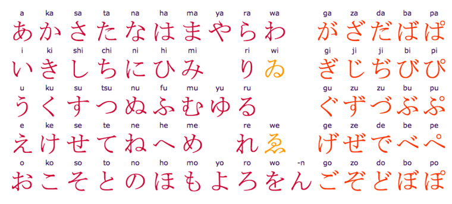

Petite intro
La langue japonaise attire et intrigue par son double système de caractères spécifiques : かな kana et 漢字 kanji. Dans le même temps, elle interroge à cause de son éloignement de nos racines latines. Comme toutes les langues qui ne partagent pas ou très peu de lien avec le français, et surtout qui ne fonctionnent pas sur un alphabet, la langue nipponne peut laisser pantois. Pourtant, son apprentissage n'est pas si compliqué qu'on pourrait le supposer. Certes, à l'écrit, il va falloir passer beaucoup d'heures de par-cœur pour maîtriser les fameux caractères. Mais la compréhension orale contrebalance l'exercice. Par-dessus tout, apprendre le japonais est une dynamique absolument passionnante, qui mérite vraiment qu'on s'y attarde.
Histoire
Les différents peuples nippons utilisent leur langue depuis plus de quatre millénaires, mais ils n'ont pu l'écrire qu'au cours du IVe siècle, lorsqu'ils commencèrent à emprunter les idéogrammes chinois, en modifiant certaines de leurs prononciations. Depuis, l'écriture japonaise a naturellement beaucoup évolué et a subi plusieurs grandes réformes de modernisation au cours de son histoire. Les plus importantes ont pris part en 1945, 1981 et 2010. Aujourd’hui, c’est une langue composée de caractères sino-japonais.
écriture
Fonctionnement
Il y a deux grands systèmes d’écriture :
... les 2 x 46 kana (ひらがな hiragana pour les mots japonais et カタカナ katakana pour les mots étrangers, sans compter leurs dérivés respectifs) simples et indispensables mais indissociables des caractères plus complexes
... les 2.136 kanji (常用漢字 jôyô kanji officiels, mais il y en aurait environ 50.000 selon certaines sources) qui peuvent être des idéogrammes, pictogrammes, sinogrammes, phonogrammes, etc
Les kanji sont constitués de clés (quelques dizaines au total) et leur tracé suit un ordre et des règles précises. Chacun d’entre eux représente une idée, et peut se lire de différentes manières (lectures kun / on) selon sa fonction ou encore sa position. À noter que les jeunes savent écrire de moins en moins de kanji ; avec l’informatisation, on n’écrit plus beaucoup à la main et vous verrez souvent des Japonais vérifier l’écriture d’un caractère dans leur smartphone 📱 ou sur un ordinateur.
Règle
Le japonais obéit à des règles précises et fait preuve d’assez peu d’irrégularités, surtout en comparaison avec le français :
À la différence d'autres langues asiatiques, le japonais n'est pas une langue tonale et sa prononciation est relativement facile à maîtriser (90% des sons de la langue japonaise se retrouvent en langue française, contre 30% à l'inverse !).
Il n’y a pas d’espace entre les mots. La lecture se fait de gauche à droite, mais traditionnellement de haut en bas et, dans ce cas, les colonnes se suivent de droite à gauche.
La construction de la langue évite les pronoms personnels et les verbes se situent généralement en fin de propositions.
Il n’y a pas de réelle conjugaison (au sens où on l’entend en français) mais plutôt des séries de déclinaisons relativement simples, liées en particulier aux structures temporelles et aux niveaux de langue.
Le japonais répond en effet à des critères de politesse assez précis (selon l’âge, le sexe, le groupe social, etc.) qui modifient, non pas la structure de la phrase, mais la forme des mots et leurs déclinaisons. Il faut ajouter également l’utilisation essentielle des particules qui, pour le coup, articulent les différents éléments d’une phrase. Sans elles, le japonais n’existe pas.